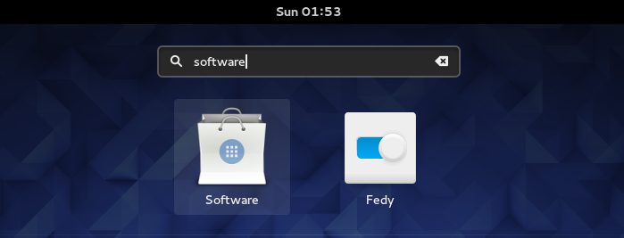
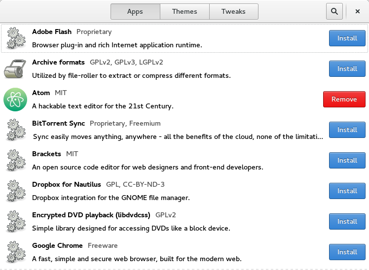
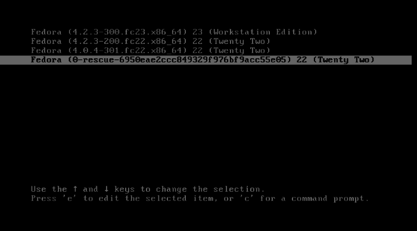

Este guia é para quem é novo em Linux e possui a versão estável do Fedora, especificamente o Fedora 23. Caso não possua baixe a última versão do Fedora Workstation.
Se já possui o Fedora, welcome aboard my friend!
Fedora Project
Antes de tudo é importante lembrar que o Fedora é uma distribuição mantida por colaboradores voluntários e possui como valores os 4 pilares: freedom, friends, features e first. Os quais enfatizam a importância do uso de software livre para a liberdade, a excelência, cultura de inovação e a importância da comunidade.
Para contribuir não é preciso ser nenhum badass, qualquer um pode contribuir com o projeto como tradução de documentos, testes, marketing, design, desenvolvimento etc. Veja como colaborar aqui.
Comandos Linux
O GNOME provavelmente é sua interface gráfica (existem diferentes interfaces gráficas no Fedora como KDE e Cinnamon, são os chamados spins do Fedora) e é bem intuitiva porém caso queira aprender alguns comandos úteis conheça o Easy Shell - Shell and Linux commands the easy way
Instalação de programas
Modo gráfico
Vários programas essenciais já estão instalados por default como o Transmission (torrents), Libre Office, Firefox e Boxes (gerenciador de máquinas virtuais) e o Fedora possui o Software Source, a qual é uma loja onde pode buscar o que deseja instalar.

O Fedy é a maneira fácil caso opte por instalar o Chrome, Flash, Java, VLC Media Player etc.
Abra o terminal e execute o seguinte comando para instalar o Fedy:
$ bash -c 'su -c "curl http://folkswithhats.org/fedy-installer -o fedy-installer && chmod +x fedy-installer && ./fedy-installer"'
Após a instalação, você poderá selecionar o que deseja instalar

Linha de comando
O dnf é o novo gerenciador de pacotes do Fedora e trata-se de uma versão melhorada do antigo yum, é comum ainda encontrar artigos usando o yum.
O gerenciador de pacotes é o responsável por buscar pacotes dos softwares que deseja instalar/remover e resolver os possíveis problemas de dependências.
$ sudo dnf search audacity #buscar software chamado audacity
$ sudo dnf install audacity #instalar software
$ sudo dnf remove audacity #remover software
$ sudo dnf update #atualiza lista de pacotes
$ sudo dnf upgrade audacity #atualizar software
O RPM (Red Hat Packager Manager) também é um gerenciador de pacotes, a diferença é que este não é capaz de resolver as dependências e conflitos automaticamente como o dnf
$ sudo rpm -q firefox #buscar pacote
$ sudo rpm -ivh firefox-47.0-4.fc24.i686.rpm #instalar firefox
$ sudo rpm -e firefox #remover
$ sudo rpm -Uvh firefox-47.0-4.fc24.i686.rpm #atualiza, remove versão antiga e instalar nova
Desenvolvedores
Não tive nenhum problema em usar Fedora para desenvolvimento, a sensação foi de maior produtividade pois raramente tive problemas com o OS.
O Python 3 é instalado por default, é fácil instalar o Nodejs, Ruby, Haskell, Lua e o OpenJDK. Todas as IDEs da JetBrains, Eclipse, Arduino e o Android Studio também são fáceis e compatíveis.
Infelizmente ainda não conheço ninguém que use Fedora em ambiente de produção para compartilhar a experiência.
Como pedir ajuda
O principal suporte é o Ask Fedora Project e existem inúmeras listas de e-mails, chats em IRC e grupos do Fedora em que você pode recorrer. Clique aqui para saber mais.
Other cool things..
Kernel
Provavelmente haverá um dia em que no momento do boot você irá se deparar com uma lista enorme de diferentes versões. Essa lista são as diferentes versões do kernel que possui instalado, é recomendado sempre possuir ao menos dois kernels diferentes caso algum tenha bug.

Para desinstalar algum kernel de versão específica:
$ sudo dnf remove kernel- #aperte tab para autocomplete
Verificar portas
Lembre-se que ao escanear servidores externos geralmente o seu IP será exibido nos logs, o Tor não é apenas um browser e com ele é possível fazer com que toda a sua rede passe pela rede Tor.
$ nmap danielammorais.com
Starting Nmap 7.12 ( https://nmap.org ) at 2016-06-19 04:25 BRT
Nmap scan report for danielammorais.com (192.30.252.153)
Host is up (0.19s latency).
Not shown: 999 filtered ports
PORT STATE SERVICE
80/tcp open http
Nmap done: 1 IP address (1 host up) scanned in 26.06 seconds
É possível listar os conectados na sua rede e explorar algum ip específico
$ nmap -sP 192.168.0.*
$ sudo nmap -sF 192.168.0.4
Reiniciar o GNOME
O tty é responsável por conectar dispositivos externos ao kernel, para acessá-los pressione CTRL + ALT + F1, CTRL + ALT + F2, CTRL + ALT + F3 e assim por diante até o F6. O seguinte comando é extremamente útil caso o modo gráfico trave e não precise reiniciar o computador.
$ sudo /etc/init.d/gdm restart
Referências
Para que servem os TTYs
http://pt.stackoverflow.com/questions/115135/para-que-servem-os-ttys
Difference between YUM and RPM
http://www.differencebetween.net/technology/difference-between-yum-and-rpm/